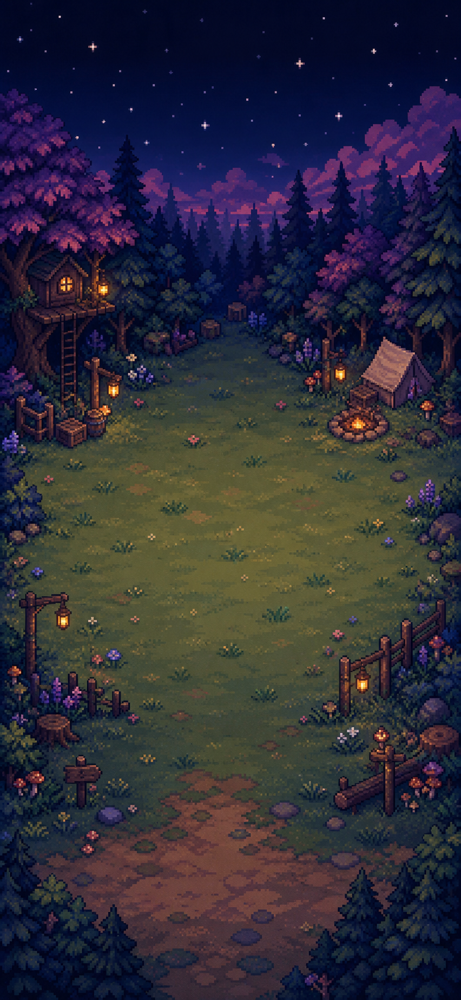
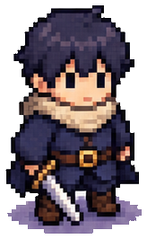
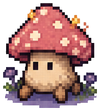
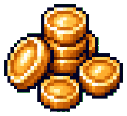
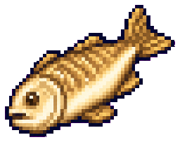
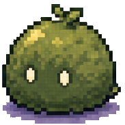
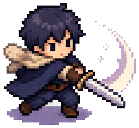
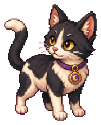

唤醒月森营地
试玩包会在当前页面内加载，也可以单独打开一个浏览器窗口。



Playable Web Build
这里接入 Godot Web 试玩包。进入后就是当前竖屏原型：自动战斗、升级、任务、背包、伙伴和收藏都会在同一个手机画幅里跑起来。
试玩包会在当前页面内加载，也可以单独打开一个浏览器窗口。
Live Camp
进来就能看到小咪巡逻、打怪、收奖励。每一次点击，都会让月森营地多亮一点。

544
20
小咪认真盯着草丛，好像那里藏着什么。
Adventure Loop
战斗、战力、背包、副本、伙伴，各司其职；不堆复杂系统，只留下每天愿意回来的理由。
自动攻击、手动补刀、掉落浮字和低概率私人日志，让放置循环有一点“她真的在冒险”的感觉。

Companions
每个伙伴都有自己的样子、身份、上阵能力和辅助能力；它们不是数字，是会被记住的同行者。

所有亮晶晶的东西，最后都会被小咪认真扒拉一下。
Collection
物品不是一串清单。金币、小鱼干、月泉钥匙和私人收藏，都会在月森图鉴里留下位置。
小咪羁绊 1 级后生效：每次扒拉金币 +1G。
Next Build
现在官网已经接入试玩；下一步继续把营地、伙伴、掉落和每日循环磨得更像一个每天愿意打开的小世界。
完整品牌视觉、全屏像素场景、互动战斗预览。
七个伙伴的形象、能力、故事和收藏入口。
GitHub Pages 承载官网和 Web 试玩包，后续迭代推送后自动更新。
Moon Forest Alpha
试玩之后留下一个名字，后续版本就把新的月森入口继续交给真正要玩的人。